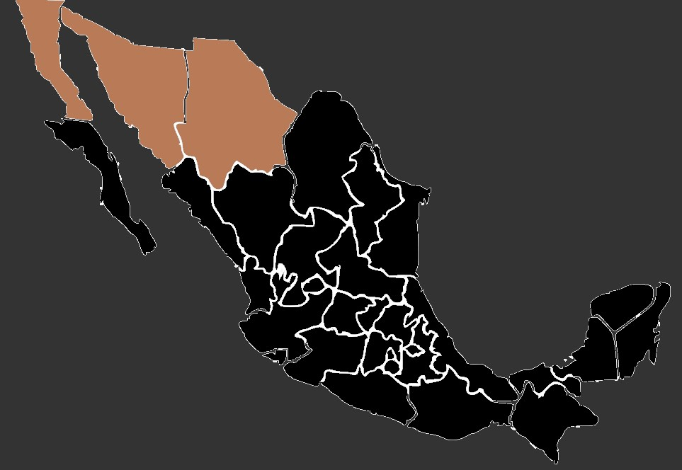

El escarabajo acorazado del desierto es nativo de regiones desérticas y semiáridas, particularmente en áreas del norte de África, Oriente Medio y partes de Asia. Su hábitat principal incluye desiertos arenosos y áreas con suelos arenosos y escasamente vegetados.
Durante el día, estos escarabajos se entierran bajo la arena para protegerse del calor abrasador del sol. Se entierran profundamente, utilizando sus patas fuertes y adaptadas para cavar, y permanecen inactivos hasta que las temperaturas disminuyen. Son más activos por la noche cuando las temperaturas son más frescas. Emergen de sus refugios subterráneos para buscar alimento, que suele consistir en materia vegetal, como hojas y raíces, así como detritus orgánicos.
Aunque tienden a ser solitarios, pueden encontrarse en áreas donde los recursos son abundantes. En estos casos, compiten por comida y refugio, especialmente durante la temporada de reproducción. Los estados mexicanos donde podrías encontrar el escarabajo acorazado del desierto incluyen Sonora, Chihuahua y Baja California.
